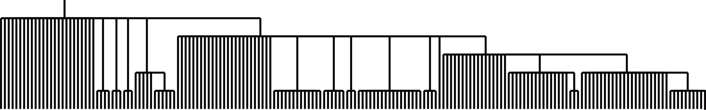
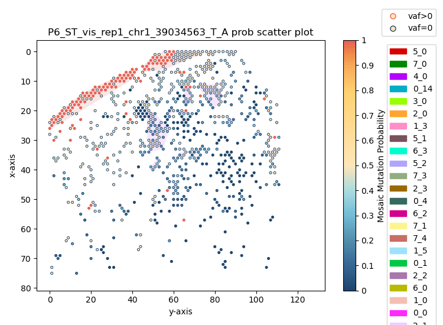
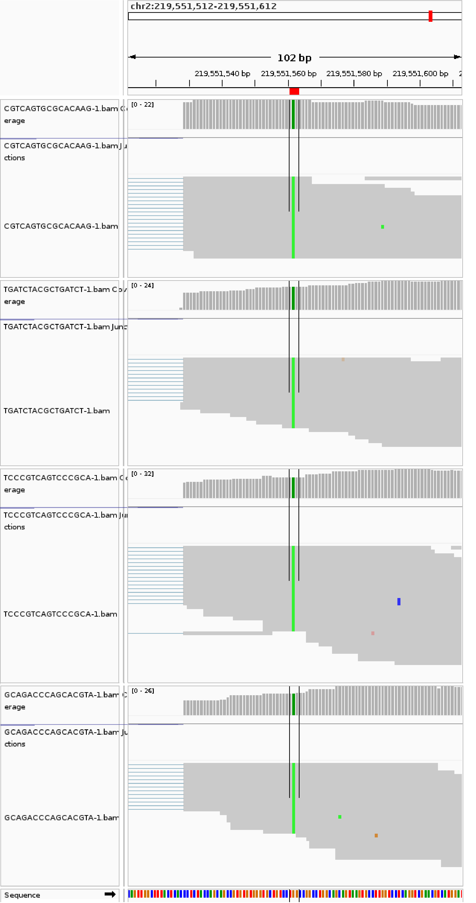
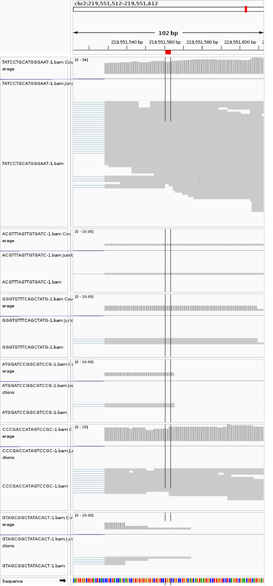

Outputs¶
This page summarizes important files generated by the SpaceTracer workflow.
Key intermediate outputs¶
-
bam_filter/IN_filter.bam
Filtered BAM used for downstream analysis. -
counts_files/*.count.out
Spot/cluster/individual allele count tables. -
geno_files/*.genotype.out
Germline and somatic genotype inference outputs. -
features_dir/*.features*.txt
Extracted and merged feature matrices for model prediction. -
predict/results/*pred_truesites*.txt
Prediction results before final recurrent-artifact cleanup.
Final output¶
$model/pred.FINAL.txt
Final high-confidence somatic mutation list.
This file is a site list with one site per line in a chr_pos_ref_alt style format, for example:
chr10_73248973_T_C
chr10_73249083_T_C
chr10_88923238_T_C
chr11_463753_A_G
chr11_61299694_C_A
chr11_64317070_G_A
chr11_75402440_T_A
chr11_78068592_T_C
chr11_8919819_A_G
chr12_113391324_A_G
You can use this site list directly for downstream analyses, including phylogeny reconstruction.
Visualization and validation¶
1) Lineage reconstruction with PhyloSOLID¶
After obtaining final predicted sites, you can run PhyloSOLID to infer lineage relationships.

2) Spatial probability scatter plot¶
SpaceTracer also supports spatial visualization of mutation probability and mutant/non-mutant spot patterns.

3) IGV validation views¶
To manually validate candidate calls, IGV snapshots can be used to compare mutant-like and non-mutant/reference-homozygous spots.
Mutant spots

Non-mutant/reference-homozygous spots

Recommended checks¶
- verify all expected step folders are present
- check non-empty key output files
- compare candidate-site counts between genotyping and prediction stages